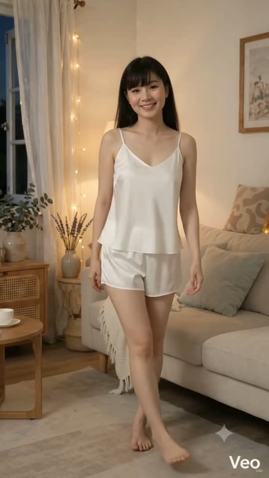
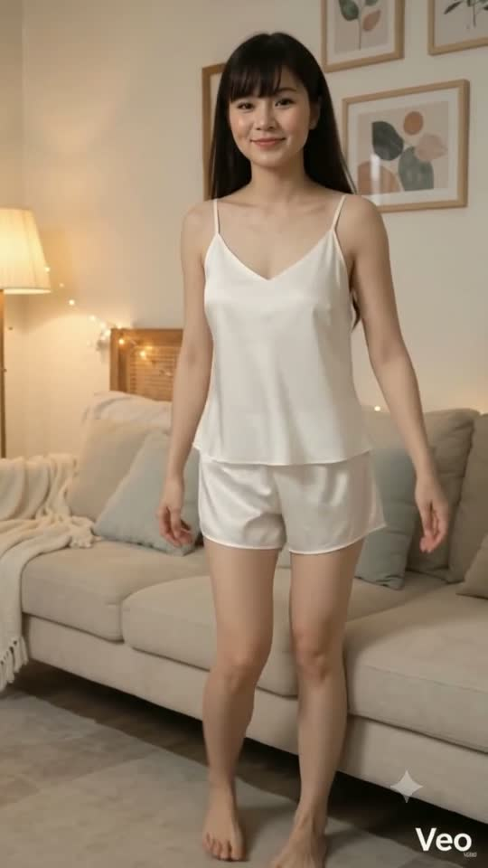

Bộ ngủ lụa 2 dây LALAVA màu Trắng: nhẹ mát cả đêm, ngủ ngon sáng dậy vẫn xinh

Tối nay đi ngủ, Lisa mặc bộ ngủ lụa 2 dây LALAVA màu Trắng — áo 2 dây cổ V, quần đùi cùng chất lụa Latin bóng mềm, nhẹ mát cả đêm. 89 nghìn thôi, đã bán hơn 5 nghìn bộ rồi. Bản hồng hôm trước được khen nhiều, bản trắng này Lisa mặc thử để bạn so sánh: bạn thích trắng hay hồng hơn?
Đọc trước khi mua: bài viết này là gợi ý phối đồ lấy cảm hứng từ các mẫu đang bán chạy trên Shopee. Lisa là nhân vật AI, nên bài viết không phải bài đánh giá sản phẩm Lisa đã mặc thật hay đã dùng thử. Giá, chất liệu và size cần kiểm tra lại trên trang bán trước khi mua. Link mua hàng:
· Set đồ bộ ngủ LALAVA 2 dây, lụa Latin, mã MS02, màu Trắng, shop LALAVA — 89.000đ, 4,8 sao (627 đánh giá), đã bán 5k+.
Một set đồ ngủ đủ 2 món, mặc lên là nhẹ — áo 2 dây và quần đùi cùng tông trắng:
Đứng toàn thân — áo 2 dây cổ V, quần đùi cùng chất lụa

Bước nhẹ trong phòng khách — lụa Latin bóng mềm, rủ tự nhiênNgồi mép sofa cười nhìn camera — mát cả đêm, không bí
Vì sao bộ này hợp mặc đi ngủ?
Lụa Latin bóng mềm, mát da: lụa Latin mềm, bóng nhẹ, mặc lên da mát ngay — trời nóng hay nằm điều hòa đều không bị bí, lật mình cũng không vướng.
Áo 2 dây cổ V thoáng: áo 2 dây mảnh, cổ V, dáng suông dài qua hông — không nút, không khóa, không belt, mặc và cởi đều nhanh, ngủ không bị cấn.
Quần đùi cạp chun thoải mái: quần đùi cùng chất lụa, cạp chun — ngồi hay nằm đều thoải mái, không siết eo, sáng dậy không hằn vết.
Màu trắng tinh, dễ mặc: trắng tinh khôi, tôn da — mặc đi ngủ hay mặc ở nhà buổi tối đều xinh, chụp ảnh trong phòng khách cũng lên màu đẹp. Trắng hay hồng, bạn chọn màu nào?
Cách chọn đồ ngủ lụa cho dáng nhỏ
Chọn set áo + quần đùi, đừng chọn váy dài: váy ngủ dài dễ vướng chân khi trở mình, dáng nhỏ mặc váy dài còn bị nuốt dáng — set 2 dây + quần đùi gọn hơn hẳn, chân nhìn dài ra.
Lụa bóng nhẹ, đừng chọn lụa bóng quá: lụa Latin bóng vừa phải nhìn sang mà không chói — lụa bóng quá dưới đèn phòng ngủ dễ lộ mọi nếp gấp.
Màu trơn, đừng chọn họa tiết rối: đồ ngủ màu trơn nhìn sạch và dịu mắt hơn họa tiết — trắng, hồng, xanh đen là 3 màu dễ mặc nhất cho đồ ngủ lụa.
Mẹo mặc đồ ngủ lụa đẹp
Giặt tay, phơi trong bóng râm: lụa Latin giặt máy dễ xước mặt vải — giặt tay nhẹ, phơi chỗ mát là giữ được độ bóng mềm lâu nhất.
Phòng ngủ thêm đèn vàng ấm: lụa trắng dưới đèn vàng ấm lên màu rất dịu — một dây đèn fairy nhỏ bên giường là đủ, không cần đèn sáng trưng.
Buộc tóc thấp khi ngủ: tóc dài buộc thấp hoặc tết nhẹ trước khi ngủ — vừa không vướng cổ áo 2 dây, sáng dậy tóc cũng đỡ rối.